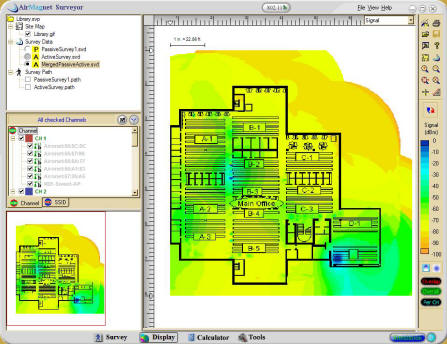

Networking Services
Leading Techs offers many different types of services for all areas of network implementation from the physical layer to the networking layer. If you are interested in any of our services please feel free to contact us for a free quote.
Network Design
Consultation
A needs analysis is used to determine the best strategy to accomplish client objectives.
Site Survey
Comprehensive site surveys are completed to accurately identify the most cost-effective way to implement the network solution. The site layout, building codes, and the current infrastructure are used to determine the best design.
Network Design
Leading Techs's design engineers complete network diagrams of the current infrastructure and the proposed solution. As-built network diagrams are created with Microsoft's Visio.
Project Schedule
Our project managers make a complete timeline for the network installation and ensure that all of the required pre-job construction, cabling installation, and network installation are completed on time.
WiFi Installation
Turn-key Solution
Leading Techs provides a seamless installation process from the initial process through the management on your WiFi installation offering a complete turn-key WiFi solution.
Equipment Comparison
Leading Techs is vendor-neutral and can provide a broad range of options to fit all budgets. Some of the wireless technologies we offer include: 802.11 abgn, Wireless over ADSL, Wireless Bridge Solutions, Wireless Mesh Networks, and Wireless VoIP.
Project Completion
Our project managers make a complete timeline for the network installation and ensure that all of the required pre-job construction, data cabling, network installation, and management handoff are completed on schedule and to the client's satisfaction.
WiFi Site Surveys
A spectrum anaylsis of the property is completed to locate any interference on WiFi channels. Signal strength testing determines Access Point placement and ensures that all required areas will be covered. WiFi signal strength will be tested with either Fluke's Air Magnet or Visi Wave. Once test results are completed the client will be presented with a visual representation of the RF signal along with reports containing other necessary information.

Network Infrastructure
Physical Layer Network Installation
Complete structured cabling solutions for enterprise network systems. Proper network cabling is critical for a stable, healthy network.
We plan all installations to include room for growth, and we do it right, the first time.
Twisted Pair Solutions
Cat 3, Cat 5, Cat 5e, Cat 6, Cat 6a, and Cat 7
Fiber Solutions
50/125 um, 62.5/125 um, Single Mode, Multi-Mode, SC, ST, LC, and MT-RJ
Cable Certification
Our licensed, certified, and insured installation engineers will professionally install, test, and certify all twisted pair, fiber or coax cables to ensure a fast efficient network. This process is typically done with Fluke Equipment, such as DTX cable analyzers.
Event IT Support Services
Event Networking Setup and Deployment
Leading Techs provides complete network design, setup, and management for events of all sizes, from basic configurations to enterprise-grade infrastructures. We offer robust networking options, including Ethernet over copper, fiber, fixed wireless, microwave, Point-to-Point, and satellite solutions.
IT Technology Support
We ensure smooth operation of event technology, including desktops, laptops, monitors, switches, access points, routers, and firewalls, ensuring reliable connectivity throughout the event.
Speaker-Ready and Breakout Session Services
Full technical support for speaker-ready and breakout sessions, including equipment setup, configuration, rehearsal coordination, slide formatting, on-site support, and remote access for virtual presenters.
Registration Services
Enhance attendee management with pre-event online registration, mobile self-service kiosks, badge printing, and streamlined contactless check-ins. Post-event, we assist in lead generation and data analysis to maximize the event’s success.
Certified Installers
Cisco
Our Network Engineers have Cisco certifications including CCENT and CCNA.
Corning
Our Data Cablers have Corning Solutions certifications including LAN-500.
Contracting
Leading Techs is a CA C-10 licensed company
Leviton
Our Data Cablers are Leviton Network Solution Certified Installers.